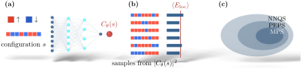

Advanced Quantum Materials 2027 · All lectures · Lecture notes
Session 10. Machine Learning Quantum Materials
10.3b Training the network and quantum state tomography
In the first part we met the ansatz and the variational loss. Let us now see how it is computed and how it is used.
To compute (10.3) without a sum over all the \(2^L\) configurations, one samples \(s\) from the Born distribution \(p(s) = |C_\theta(s)|^2/\sum_{s'}|C_\theta(s')|^2\) and evaluates the energy as an average of the sampled local energy,
\[E_{\rm loc}(s) = \sum_{s'} H_{s s'}\, \frac{C_\theta(s')}{C_\theta(s)}, \qquad E[\theta] = \big\langle E_{\rm loc}(s)\big\rangle_{s\sim p}, \tag{10.4}\]
which only needs \(H\) between the configurations that are connected by the Hamiltonian, which is usually sparse, and not the full \(2^L\times 2^L\) matrix. The training is then done in the same way as in (10.1). We compute the energy and its gradient with respect to the parameters of the network,
\[\frac{\partial E}{\partial \theta_k} = 2\,\mathrm{Re}\Big[\big\langle E_{\rm loc}(s)\, O_k^*(s)\big\rangle - \big\langle E_{\rm loc}(s)\big\rangle\big\langle O_k^*(s)\big\rangle\Big], \qquad O_k(s) \equiv \frac{\partial \ln C_\theta(s)}{\partial \theta_k}, \tag{10.5}\]
and we update \(\theta_k \to \theta_k - \eta\, \partial E/\partial\theta_k\) many times, with a learning rate \(\eta\) as in any other training of a neural network, until the gradient vanishes and the energy has converged to its variational minimum.
We should now say clearly how NNQS is related to the other variational ansätze of this course. The slides show this as a set of nested regions. The full many-body Hilbert space is one region, and inside it there is a smaller region with all the states that an NNQS with a given architecture can reach. Projected entangled pair states are inside this NNQS region, and matrix product states, which we built in session 7, are inside the PEPS region. The parameterizations of gapped one-dimensional systems are in the innermost region, since a matrix product state is a particular and highly structured choice of “network.” NNQS is therefore the most expressive of the variational families of this course, because it imposes the least structure on how the coefficients depend on the configuration. Equation (10.3) is the loss function, and (10.4)-(10.5) are the training procedure, and together they make this picture a working method and not only a structure. Figure 10.2 shows all three parts, which are what the network computes, how the sampled estimate of the energy is built, and the nested picture.

10.3.1 Quantum state tomography
A second and different use of the same NNQS ansatz is quantum state tomography. Let us take a real experimental system in some unknown state \(|\psi\rangle\), and let us say that the only access that we have to it is through projective measurements. We measure the state of every spin, and the system collapses to one configuration \(s\) with probability \(|C(s)|^2\). If we repeat the measurement many times, we obtain a set of observed configurations that are distributed according to \(|C(s)|^2\). However, we never observe \(C(s)\) itself but only its modulus squared, and to do this for all the \(2^L\) configurations one by one is the same exponential problem that we started with.
The solution has the same structure as the ground-state search above. We parameterize the unknown amplitude and phase with a network, for instance a restricted Boltzmann machine, or with two separate networks, one for \(|C_\theta(s)|\) and one for its phase. Then we fit \(\theta\) by maximum likelihood to the observed measurement outcomes, instead of minimizing an energy. In practice, one maximizes \(\sum_{s} n(s) \ln p_\theta(s)\) over \(\theta\), where \(n(s)\) counts how many times the configuration \(s\) was observed and \(p_\theta(s) = |C_\theta(s)|^2/\sum_{s'}|C_\theta(s')|^2\) is the probability predicted by the network. This reconstructs a full approximation to the unknown wavefunction with far fewer than \(2^L\) measurements, and this is what makes it useful as an experimental tool, since nobody can run a tomography experiment that needs an exponential number of measurements.
In the local energy (10.4) the sum over \(s'\) has only a few terms. What makes this possible?
Show the answers
- A. ✗ False
This is false. A network such as the restricted Boltzmann machine gives a non-zero amplitude for every configuration. There are \(2^L\) of them, and the sum over \(s'\) is short for another reason.
- B. ✓ True
This is true. For the Heisenberg chain of \(L=40\) spins, each of the \(39\) bonds changes \(s\) into at most one other configuration, and not into \(2^{40}\). A dense random \(H\) would not have this property.
- C. ✗ False
This is false. Sampling replaces the sum over \(s\), but not the one over \(s'\). For a dense \(H\) each sampled \(s\) would still need \(2^L\) terms of \(s'\).
In tomography we measure only the spin of every site along \(z\), and we fit \(\theta\) by maximum likelihood. Which information about \(C(s)\) do these data never contain?
Show the answers
- A. ✗ False
This is false. The counts follow \(|C(s)|^2\), so \(|C(s)|\) is fixed. Two states \(C(s)\) and \(C(s)e^{i\phi(s)}\) give the same counts, but they have the same modulus.
- B. ✓ True
This is true. The states \((|\uparrow\rangle\pm|\downarrow\rangle)/\sqrt2\) both give \(50\%\) and \(50\%\) along \(z\), and they differ in the phase. We need other bases to fix it.
- C. ✗ False
This is false. The ratio of the counts \(n(s)/n(s')\) gives \(|C(s)|^2/|C(s')|^2\) directly. So the relative weight is in the data, and only the phase is missing.
This part comes from the slides and the transcript and has no notebook counterpart, in line with the fact that this session has no companion notebook. There is no sessionN.ipynb cell to point you to here, so (10.3)-(10.5) and the tomography likelihood above are the complete and self-contained derivation.